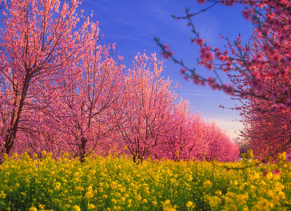
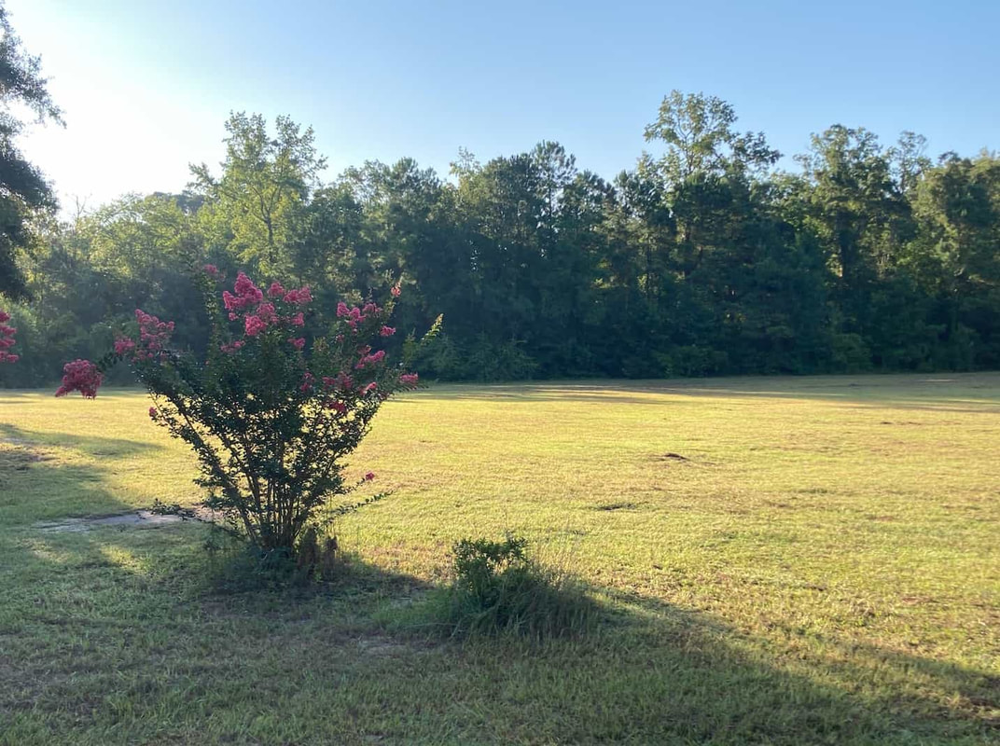

Trade your skills for a free stay on the farm. We match you to work you'll genuinely enjoy — and you leave knowing you built something real.
We're a registered WWOOF USA host (World Wide Opportunities on Organic Farms). The arrangement is the same one WWOOF has run successfully for 50 years: volunteers contribute meaningful work hours in exchange for accommodation and meals on the farm. No money changes hands.
What makes us different: we take skill-matching seriously. We've been burned by "learning experiences" that turned into mutual frustration. We want to know what you're actually good at and what you actually enjoy — and we'll find the overlap with what we genuinely need done. That way you leave having done real work and feeling like you mattered.

Tell us what you're good at and what you want to do. The more honest you are, the better the match.
Fruit tree planting, raised beds, composting, and soil prep for the orchard and garden areas.
Barn restoration, shed building, fencing, stage construction, and general structural work.
Running conduit, panel work, lighting installs for event spaces and outbuildings.
Wayfinding signs, barn murals, event graphics, and visual identity support.
Documenting the build-out, events, and farm life for social media and the website.
Clearing, hauling, mowing, equipment operation, animal care, and whatever the day demands.
Prep and support for farm dinners, catered events, and test cooking with fresh produce.
Development, content management, social channels, or whatever you do that we can't.
Daily care for chickens, cats, and other farm residents. The cat has opinions; you'll need patience.

Typical stays run one to three weeks. Longer arrangements can be discussed for volunteers with specialized skills or ongoing projects.
Fill out the form below and we'll be in touch to discuss timing and how to make the most of your stay. You can also apply directly through WWOOF.